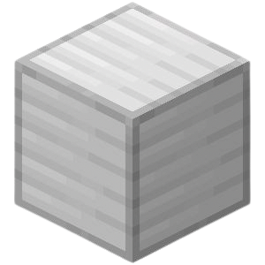
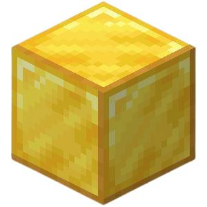

JORNADA
SERVIDORES
TUTORIAIS
CANAIS
MODS
Mods
Mods de Minecraft
OptiFine:
Melhora o desempenho e adiciona suporte a shaders
.
Biomes O' Plenty:
Adiciona uma variedade de novos biomas ao jogo
.
Thaumcraft:
Introduz um sistema de magia e alquimia
.
Tinkers' Construct:
Permite criar ferramentas e armas personalizadas
.
JourneyMap:
Adiciona um mapa interativo em tempo real
.
Mekanism:
Um mod que adiciona máquinas e itens diversificados
.
AppleSkin:
Permite que você veja quanta saturação uma comida recuperará
.
Comestic Armor:
Permite uma maior customização de armaduras
.
Xaeros Minimap:
Adiciona uma mapa com diversas funções
.
Travelers Backpack:
Adiciona mochilas
.
Morph:
Permite que você se transforme em mobs e players
.
Lumberjack:
Adiciona uma machado que quebra uma árvore inteira de uma vez
.
Krate:
Adiciona uma nova forma de armazenamento
.
Iron Chest:
Adiciona novos baús que possuem mais espaço
.
MrCrayfish Gun:
Adiciona armas
.
Open Block Elevator:
Adiciona Elevadores
.
Lucky Block:
Adiciona um bloco que dá resultados aleatórios
.
Grappling Hook:
Adiciona um gancho que permite um transporte diferente
.
Twilight Forest:
Adiciona uma nova dimensão com itens muito fortes
.
Costumes:
Adiciona novas roupas
.